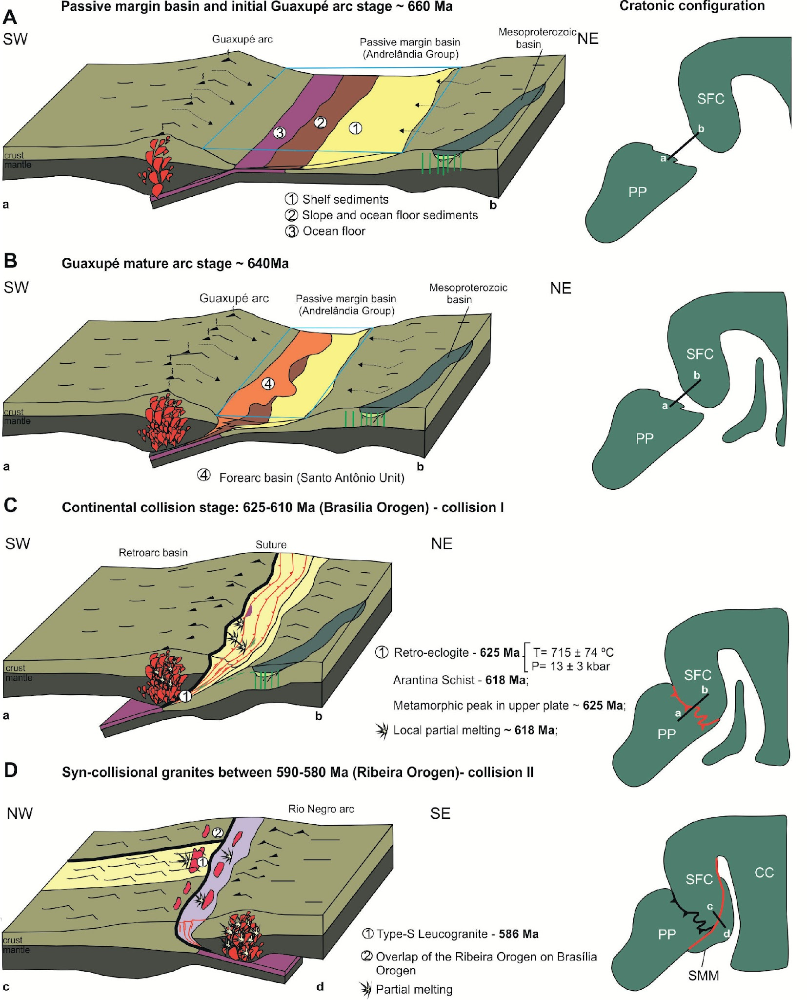

Constraining timing and P-T conditions of continental collision and late overprinting in the Southern Brasíliaa Orogen (SE-Brazil): U-Pb zircon ages and geothermobarometry of the Andrelândia Nappe System

Resumo em Português
O Sistema de Nappes Andrelândia (SNA) é um componente importante do Orógeno Brasília Meridional (OBM) do Neoproterozoico, no sudeste do Brasil, e sua evolução está relacionada à convergência e subsequente colisão entre a margem passiva do paleocontinente São Francisco e o bloco Paranapanema durante a Orogenia Brasiliana. O SNA é composto principalmente por um empilhamento de rochas metassedimentares deformadas que registram um padrão metamórfico invertido, variando respectivamente de fácies anfibolito na base a condições de granulito de alta pressão no topo. O SNA é aqui simplificado em nappes inferior, média e superior. Quatro amostras de diferentes ambientes tectônicos dentro do SNA foram coletadas para investigação isotópica de zircão. Além disso, modelagem geotermobarométrica foi realizada em sete amostras da nappe média. Fatias de retroeclogito associadas a rochas gnáissicas do embasamento ocorrem ao longo do contato entre as nappes superior e média e apresentam grãos de zircão com bordas metamórficas, crescidos em condições de alta pressão (12–16 kbar) e temperaturas de aproximadamente 700–800 °C, durante a subducção continental datada por U-Pb SHRIMP em zircão em 625 ± 6 Ma. Um período de emplacamento da nappe, acompanhado por fusão na nappe média, é evidenciado por um xisto de granada-muscovita-estaurolita-cianita com leucossoma paralelo à foliação principal, datado por U-Pb SHRIMP em zircão em 618 ± 5 Ma. O reequilíbrio a pressões de 4–7 kbar e temperaturas de aproximadamente 500–700 °C é atribuído a um segundo pulso térmico sob condições de pressão mais baixa. O período de fusão associado a este evento na napa média ocorreu em 586 ± 9 Ma e é marcado por um granito tipo S anatexítico contendo turmalina-granada-muscovita. Este corpo granítico faz parte de um cinturão de granitos NE-SW, com idades entre 605 e 563 Ma e que cobre tanto o Orógeno Ribeira Central (ORC) quanto o Orógeno de San Bernardino (OSB). A idade e o alinhamento deste cinturão granítico justificam a interpretação de que ele está geneticamente relacionado ao ORC. Assim, os novos dados fornecem evidências de que eventos tectonotérmicos relacionados à frente colisional do ORC se estenderam até ∼200 km, sobrepondo-se ao OSB consolidado por volta de 580 Ma. Palavras-chave